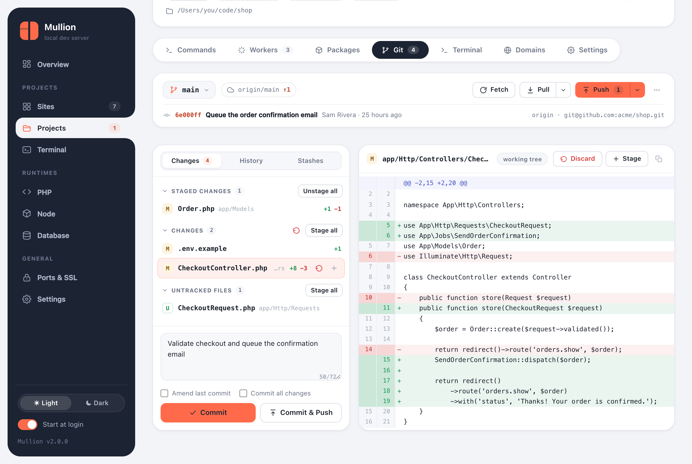

Using Mullion
Git
Every project page has a Git tab: see what changed, commit, sync with the remote, and handle branches, history, stashes and conflicts.

Status and diffs
- The top bar shows the branch, its upstream, and how many commits you're ahead or behind, with Fetch, Pull and Push buttons.
- Changes groups files into staged, unstaged and untracked. Click a file to see its diff.
- Stage, unstage or discard a single file, or everything in a group at once.
- Site cards and the sidebar show a count of changes, which updates while the tab is open.
Committing
- Write a message and Commit (⌘/Ctrl+Enter), or Commit & Push in one step.
- Amend last commit rewrites the previous commit.
- Commit all changes includes unstaged files without staging them first.
- A counter under the message helps keep the subject line short.
Syncing
- Fetch updates the remote-tracking branches.
- Pull merges by default; the menu next to it offers rebase and fast-forward only.
- Push sends your commits. A branch with no upstream is published, which sets its upstream. Force push uses
--force-with-lease, so it never overwrites work you haven't seen.
Branches, history and stashes
- The branch menu switches, creates and deletes branches.
- History lists recent commits; click one to see its changes.
- Stashes can be created, applied, popped and dropped.
Merge and rebase conflicts
During a merge, rebase or cherry-pick, a banner shows what's in progress and which files conflict. Fix the files, stage them, then press Continue (or commit, for a cherry-pick). Use Abort to go back to where you started.
Signing in to the remote
The panel can't answer a password or passphrase prompt. If a fetch, pull or push fails with a sign-in error, sign in once from a terminal; your credential helper or SSH agent remembers it after that.
- For HTTPS remotes, run the same Git command once in the built-in terminal.
- For an SSH key with a passphrase, add it to your agent. On macOS:
ssh-add --apple-use-keychain ~/.ssh/id_ed25519. On Windows, start the OpenSSH Authentication Agent service and runssh-add.
Credentials in remote URLs are never shown in the panel.